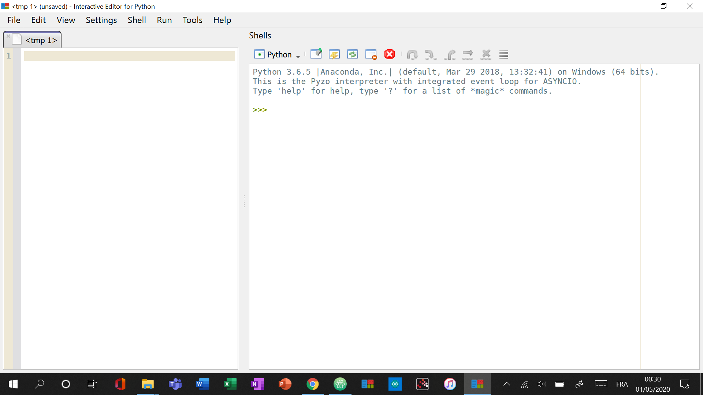

Installer Python
Cliquer sur les deux liens de téléchargement :
Commencer l'utilisation :
- Ouvrir le fichier Anaconda (dans les téléchargements) et finir l'installation en suivant les étapes
- Faire de même avec le fichier Pyzo
- Ouvrir l'application Pyzo depuis le Bureau
Comprendre Pyzo :
- A gauche de l'écran se trouve l'encadré où peut être écrit du code
- A droite, se trouve l'encadré où le code s'exécute
Vous devriez découvrir un tel écran :
{kind=link}
Il faut bien 3 flèches vertes dans l'encadré de droite
- Eteignez Pyzo (croix rouge en haut à droite)
Effectuer du code :
- Cliquez sur ce lien
- Puis cliquez sur le boutton vert 'Clone or download' puis sur 'Download ZIP' (vous téléchargez le coach sportif de ClemPat75)
- Dézippez le fichier et ouvrez le dossier 'sport_coach_pyzo'
- Faites un clique droit sur le fichier 'main_Pyzo' pour 'ouvrir avec' 'Pyzo'
- Dans Pyzo, tapez 'ctrl'+'E' et le fichier alors dans l'encadré de gauche s'effectura et l'application Coach Sportif s'ouvrira
{kind=link}
{kind=link}